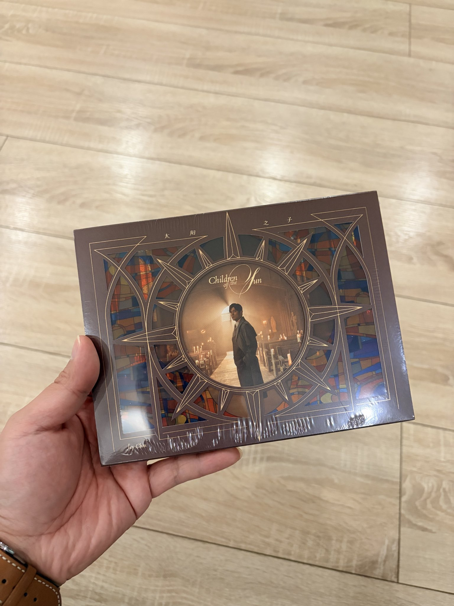

たたなこ
@tatanakots
@manateelazycat 我很多时候会买张CD用EAC抓碟后上传到NAS里面听数字版，包括番剧也是，用makemkv抓取解密bdmv到NAS里面去看m2ts
我数字化我的正版收藏方便随时取阅应该不能算盗版

Andy Stewart
@manateelazycat
推友们给个看法
公司小伙伴说的话让我有点蒙
他说买正版 CD 是为了听“数字盗版”
原因就是不想给腾讯交钱，等 Apple Music 的太阳之子上线。
所以如果他现在听本地音频，到底算正版还是盗版呢？🤣 https://t.co/ZwCOAne8Jv